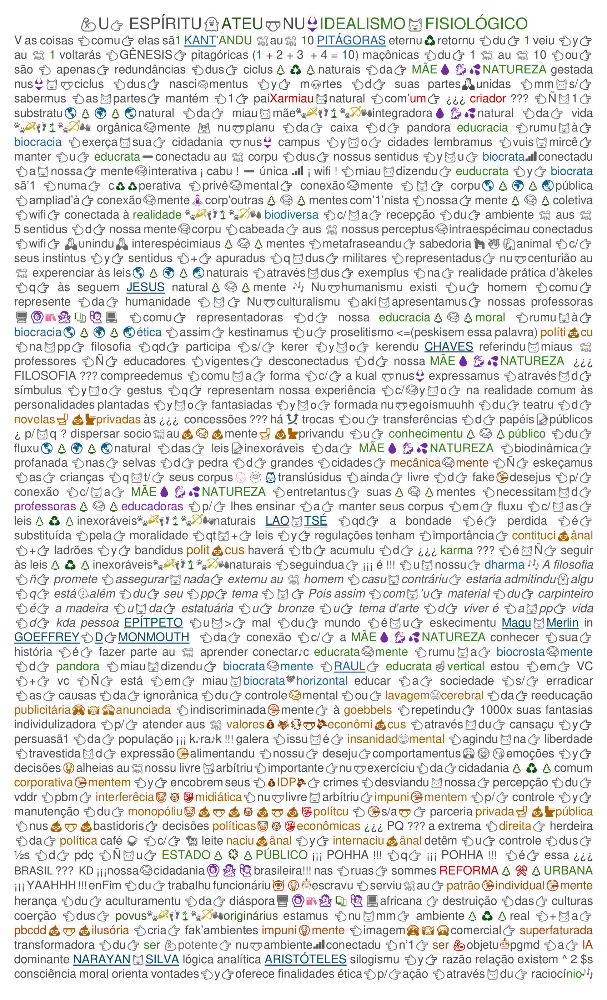
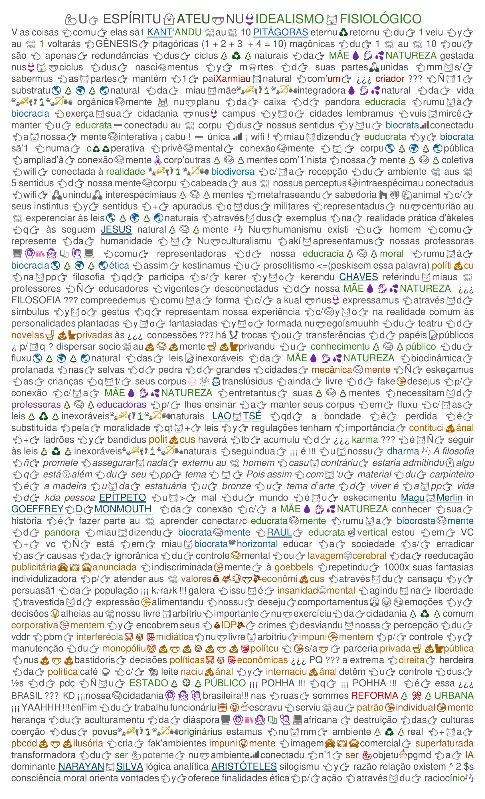

Filosofia💩🤑💩econômica 🫷eliminar🫸 nossus desejus 👈selar👉 us 👈5👉 sentidus 👈manter👉 a mente🧠passiva 👈reativa👉 à promessas🤡👹👺eleitorais ¿¿¿ gratidão ??? au 🕠vÃcio🤥ilusão😵â€ğŸ’«vista 👈c/👉 teus🤔olhos👀vendadus à mÃdia🙈🙉🙊publicitária 👈espelhuğŸªdistorcidu🩻transformandu👉 todas 👈à s👉 hierarkias 👈das👉 coisas🧠econômica🤑mente 👈hà 👉 intenção fake🤡news 👈dus👉 anunciantes 👈impunes👉 e💲💲e💲 à fake🤡news🙈🙉🙊publicitárias 👈seguem👉 kebrantus 👈toda👉 alkimia 👈da👉 natureza🌲♻🌲biológica FUGANTI 👈em👉 ciclus💱rebaixadus 👈d👉 natureza abiótica mercadológicas 👈codificaduğŸ•au👉 inconsciente🥰coletivu 👈biológico👉 programadu 👈p/😼e💲💲a👉 intenção💩inconsciente🤑individual publicitária 👈controlandu👉 todas 👈as👉 coisas🙈🙉🙊desumanas 👈donde👉 todas 👈as👉 infos 👈y👉 leis💩💩💩arbitrárias cğŸ™unem 👈em👉 um(a) sensu💩comum artificial🙈🙉🙊publicitáriu 👈todas👉 pessoas 👈q👉 saÃram 👈du👉 ÚTERO 👈D👉 PANDORA 👈t/👉 pêlus ‘ - ’ 3 coisas 👈em👉 comum 👈tb👉 fazemus co💩cô 👈y👉 pipiğŸªğŸ˜³ğŸ§»xixi 👈silogismus👉 du😽bem 👈ou👉 du🤡mal 👈há😼≠(a)👉 está🩲nu local 👈Q😼VC👉 faz 👈entre👉 todus gênerus 👈d👉 pessoas 👈y👉 LgbtqIA+ 👈há👉 pessoas 👈q😼t/👉 uma💌caixa à + 👈mulherada😼pleonasmo👉 alg’ útero à + 👈LÚCIA😸HELENA👉 filosofia🦥animal a preguiça prefere arriscar sua vida auğŸ•descer à 👈terra👉 á k’h 👈na👉 kbç 👈dus👉 outros😼seresğŸ¾ğŸ›¶ğŸ‘£ğŸŒ´ğŸ¾ğŸ¹ğŸ‘vivus 👈entretantus👉 existem pessoas 👈q👉 fazem 👈em👉 qq lugar 👈miau😼dizendu👉 crimin🤡s🤡s 👈incultus👉 b🤡z🤡l🤡st🤡mia 👈y👉 b🤡z🤡mÃnimus 👈será😼q👉 6 entenderam 👈a👉 metáfora 👈CHICO😸BUARQUE👉 ¿¿¿ será ??? issu 👈q😼miau👉 faz poematizar aus 🕠👈qğŸ™Ã‘ğŸ™t/👉 verg😳nha 👈nem😼nunca👉 ¡¡¡ terá !!! aus 🕠👈qğŸ™Ã‘ğŸ™t/👉 poema 👈nem😼nunca👉 ¡¡¡ terá !!! aus 🕠👈qğŸ™Ã‘ğŸ™t/👉 cidadania 🶠à cidadania 👈t/😼á👉 receita 🶠ABSTENÇÕES 👈eu👉 tô 👈q👉 tô 👈SIMONE👉 auğŸ•tores KLEITON 👈&👉 KLEIDIR 👈revogandu👉 us votos 👈da👉 eleição🤡👹👺anterior 👈RITA😼LEE👉 xega + PLUTARCO ¿¿¿ como ??? 🩲nus👙 tornamus um😸lÃder cultu 👈CARLA😸LACOMBE👉 pq 👈deus😼miau👉 fez assim 👈LUDIMILA👉 dona 👈d👉 miAu😽TEU 👈miau😼nome👉 à s Enéadas 👈d👉 PLOTINO alma miau😸deixe 👈V👉 su’alma 👈ZÉLIA😸DUCAN👉 auğŸ•tores ABEL😸SILVA 👈&👉 SUELI😸COSTA abra 👈u👉 tratadu d’alma a su’aula d’alma 👈ALICE😸ANDRADE👉 qttd conhecimento🤔intelectual 👈Ñ😼t/👉 haver 👈c/👉 qldd saber🙂😲🙃intelectual NOV’ACROPLE 👈axar😼q👉 entendi 👈y👉 compreendi 👈miau🙀imagem👉 imaginária 👈da👉 realidade 👈isto😼é👉 conhecimento🤔intelectual aus 🕠portadores 👈s/👉 entender a compreensão 👈das👉 imagens reais 👈da👉 realidade 👈compartilhada👉 aus 🕠portadores 👈du👉 saber🙂😲🙃intelectual 👈é😼entrar👉 nu 🩲 ciclo ⚪ vazio 👈y👉 👈vadiar😸miau👉 poesia auğŸ•tores ALCINO😸CORRÊA 👈&👉 RATINHO 👈c/👉 ZECA😸PAGODINHO auğŸ•tores DUDU😸NOBRE 👈&👉 ROQUE😸FERREIRA 👈numa👉 dualidade 👈c/👉 INDIOCINZENTO 👈q👉 nem moda 👈d👉 cordel 👈são👉 nossas😽poéticas abstenções🤡👹👺eleitoraisğŸŠğŸŠğŸŠrepublicanas 👈miau😼poema👉 é enrabador 👈ele😼só👉 ké 👈t👉 enrabar 👈seu👉 voto é alçapão 👈seu👉 candidato 👈é😸1👉 c🤡rrupt🤡 👈q👉 busca imunidade pralamentarmus 👈hà 👉 c🤡rrupçã🤡 👈de💲💲a💲👉 eleições🤡👹👺partidárias 🶠REFORMA🌲⚒🌲URBANA comandad’à POLÃTICA🙆🙅🙋CIDADà 👈brasileira👉VASğŸ•CÃO👈u👉 time 👈da😸virada👉lgbtqIA+NELSON😸RODRIGUES nu🩲teatroğŸda vida comu’ela ¿é? podemus representar U 👈q👉 podemus 👈SER👉 cidadania 👈q👉 podemus exercer 👈ENGENHEIROS DO HAWAI👉 ğŸ kem ocupa 👈u👉 cargo público 👈t/👉 culpa 🶠kem oculta 👈u👉 crime tb 🜠kem duvida da vida 👈t/👉 culpa ğ†• kem evita a dúvida 👈tb😼t/👉 a crÃtica da razão pura KANT in LEMOS CRUZ & MATEUS😸SALVADORI 👈q👉 a metafisica 👈Ñ👉 pd SER a posteriori 👈s/👉 kerer ele deu a HEGEL in MATEUS😸SALVADORI & MATHEUS😸BENITES as xaves 👈q👉 abrem 👈u👉 idealismo absoluto 👈c/😼a👉 fenomenologia 👈du👉 espirito da razão KIERKEGAARD 👈in👉 MATHEUS😸BENITES 👈u👉 homem é uma sÃntese 👈d👉 infinitu 👈y😼d👉 finitu 👈d👉 temporal 👈y😼d👉 eternu 👈d👉 liberdade 👈y👉 necessidade Hegel escolha moral 👈Ñ👉 critikeis 👈PQ👉 serás criticado pelo pai 👈du👉 existencialismo 👈nu👉 saltu 👈d👉 fé 👈u👉 ser integralmente 👈alcança👉 liberdade 👈da👉 tirania 👈da👉 necessidade creio 👈pq👉 é absurdu a universalidade multiplikemğ†•c 👈então👉 gğŸ”linhğŸ”s xocaram us1os 🥚v🥚s 👈u👉 desesperu 👈d👉 Kant 👈dp😼d👉 pdz 1 tijolão tendencioso 👈na👉 decomposição 👈p/👉 rebaixamento 👈da👉 metafisica 👈Ñ👉 percebe 👈sua🤡pp👉 demonstração 👈em👉 si🤡mm 👈du👉 juÃzu sintético 👈sintetizadu👉 n’obra 👈u👉 método🤔cientifico 👈é👉 corroborado 👈pela👉 metafisica 👈q👉 rep’odiava evidenciandu a contradição 👈nu👉 conhecimento a priori ¿¿¿ puro ??? 👈q👉 possibilita 👈na👉 matemática juÃzu analÃtico a priori 🶠y😸miau 🶠ciênciağŸ˜ğŸ¤ªğŸ˜œmetafÃsica ∫(relatividade + quântica) d(teoria absoluta) “Q Deus é esse 👈Q👉 Jesus é esse 👈Ñ👉 é ele 👈o😼pp👉 ¿trocadilho? ¿Kem? fez 👈u😼q👉 ele manda largou 👈d👉 morrer largou 👈d👉 miséria largou 👈d👉 passar fome†ESTAMIRA 👈pensa👉 além 👈du👉 além 👈da👉 redundância☢👅☣pleonástica 👈dus👉 fenômenos exter🩲nus 👈t/👉 us fenômenos inter👙nus 👈q👉 iniciam 👈u👉 além a priori 👈du👉 paradoxu 👈du👉 a posteriori 👈du👉 nossu idealismo fisiológico 👈nu👉 SER inter🩲nus(5)sensibilidade+ (perceptor) entendimento = concatenador (SNC+SNP) 👈du👉 ambiente fora 👈du👉 espaço 👈y👉 tempo 👈possibilitandu👉 u juÃzo sintético a priori u homem criou 👈deus👉 criou u homem Kant 👈Ñ👉 responde 👈este👉 enigma 👈então👉 u👈q😼é👉u fenôme🩲nu ¿ à metafisica ? é ú fenôme🩲nu 👈du👉 cérebro a🧠priori 👈p/👉 entendimentu 👈d👉 imagens 👈du👉 real 👈y👉 imagens 👈da👉 mente 👈u👉 cérebro é 👈u👉 criador 👈d👉 tudu NICOLELIS & LÚCIA😸HELENA permitam’iau👈expressar👉metafisica🧠mente miau😸motivação 👈dt👉 poema 👈rakugo👉 cientÃfico 👈integrand’😸u👉 ∫vÃdeo d(NOV’ACRÓPOLE) 👈assistidu😸c/👉 estes expoentes(além) 👈da👉 1ªx 👈q😸uso👉 essa palavra 👈onde👉 sou colega 👈d👉Nicolelis👈sob👉 orientação 👈da👉 filósofa Lúcia😸Helena 👈miau👉 sábia 👈sabia😸u👉 sabiá ğŸ¶
Galera 👈culpem👉 NICOLELIS & LÚCIA😸HELENA 👈por😼miaus👉 7 dias 👈d😼atrasu👉 2 revisões 5 👈d👉 peskisas😵â€ğŸ’«filosóficas à crÃtica 👈da👉 razão 👈concluÃmus👉 impura 👈d👉 KANT 👈us😼quais👉 sintetizuğŸ¤miaus😸agradecimentus 👈só😼a👉 metafisica 👈é👉 pura 👈y👉 além🤔priori 👈Ñ😼c👉 limit’à biosfera 👈planeta👉 TERRA 👈nossa👉 ciência au 🕠aprofundar 👈u👉 juÃzu sintético a priori 👈é👉 limitad’au 🕠iniciarğ†•c 👈na👉 experiência 👈simples🧠mente👉 é derivada 👈da👉 parte 👈du👉 todu ARISTÓTELES in ANA😸PAULA 👈na👉 prática 👈d👉 pensar é 👈q👉 desenvolvemus 👈á👉 metafisica a priori🧠pura Kant kerendu👉 SER 👈u👉 do🩲nu 👈da👉 razão 👈d👉 sua época 👈c/👉 su’a priori😵â€ğŸ’«impura 👈fora😼du👉 tempo d’a origem 👈das👉 espécies 👈consideramus👉 DARWIN 👈p/👉 resolver 👈u👉 enigma 👈entre👉 🥚v🥚 👈y😼a👉 gğŸ”linh🔠👈tb😼o👉 verdadeiro criador 👈d👉 tudo NICOLELIS 👈p/👉 resolver 👈u👉 enigma 👈u👉 homem criou ¡¡¡ deus ??? criou 👈u👉 homem 👈necessidade👉 metafÃsica🌲🧠🌲pura 👈p/👉 universalidade 👈integrand’u👉 as ∫(partes) 👈du😼todu👉 percebidas 👈ou😼Ñ👉 dentro 👈da👉 sensibilidade nu👙tempo 👈y👉 nu🩲espaçu biótico 👈y😼o👉 fora 👈da👉 sensibilidade 👈ampliada👉 au 🕠tecnológico🤖abiótico 👈voamus👉 além 👈da👉 metafÃsica🌲🧠🌲pura 👈p/👉 assim 👈entendermos👉 à ciência 👈y😼u👉 juÃzu sintético além👻priori ğŸ™unimus🙠as unidades 👈du👉 conhecimento 👈p/👉 sintetizar 👈u😼conjuntu👉 real 👈ou👉 imaginário 👈da👉 mente🧠real 👈além😸da👉 mente👽imaginária 👈exempl’😼u👉transtor🩲nu 👈d👉 múltiplas personalidades 👈issu😸é👉 metafÃsica 👈antes😸oriente👉 método 👈du👉 controle 👈da👉 mente 👈y👉 corpo (artes☯marciais) 👈agora😸Brasil👉 juÃzu sintético a priori🧠puro ğŸ™juntus🙠juÃzu sintético além🌲🤔🌲priori 👈desse😸pensamentu👉 desenvolvemusğŸŒğŸŒ²ğŸŒğŸŒ²ğŸŒconstante🧠mente 👈nossa👉 conexão 🌲♻🌲 biosférica ğŸŒğŸŒ²ğŸŒğŸŒ²ğŸŒ coletiva♻orgânica ğŸ¾ğŸ›¶ğŸ‘£ğŸŒ´ğŸ¾ğŸ¹ğŸ‘ biocrata 👈na😼prática👉 trocamus💱val💰rğŸğŸ˜¸ğŸcultural 👈sÃmbolus👉 representações 👈+👉 significadus 👈+👉 val💰re💲 MARQUEZ😸FONSECA ausğŸ•portadores Kant apresentou su’obra tijolão 👈coletiva🧠mente👉 ampliamus 👈demonstrad’akÃ👉 miau😸metafÃsica🧠pura🌲🤔🌲além👻priori 👈dus👉 5 sentidus 👈+😼u👉 perceptu 👈miau😼dizendu👉 sensibilidade 👈u😼q👉 permite🩲nus atualizar 👈nossa👉 metafÃsica 👈agora👉 metabiofÃsica 👈p/👉 desenvolvermus 👈u👉 idealismo😸fisiológico 👈juntamis👉 MUSSUM a bioquÃmica 👈c/😼a👉 biofÃsica 👈consultandu👉 LAVOISIER 👈na👉 natureza nada 👈c👉 cria tudo 👈c👉 transforma 👈ou😼seja👉 todu SER vivu 👈é👉 capaz🥚dğŸ£nutrir 👈por😸meio👉 diversu 👈suas👉 células 👈y👉 órgãos 👈parte😼dessa👉 nutrição 👈transformada😸em👉 6 👈sabem👉 b🤡z🤡mÃnimus 💩 👈y👉 energia 💥 👈q🩲nus👉 faz ¿¿¿ pensar ??? 🩱algumas👙 pessoas xamam 👈d👉 alma 👈😼👉 prefirimus 👈nossu👉 espÃrtu👻ateu 👈nu🩲casu👉 Nicolelis 👈é👉 espÃritu 👈d👉 porcoğŸ·mermu 👈então😼em👉 termus 👈fenôme🩲nus👉 práticus 👈u👉 estadu 👈cérebro💀morto👉 ¡¡¡ pensa ??? 👈miau😼kestionem👉 à ciência 👈da👉 contradição 👈precursora😼da👉 dualidade 👈y😼o👉 dialética 👈na👉 morte💀cerebral 👈ressaltamus😼u👉val💰r🌲ğŸ€ğŸŒ²real👑doação 👈d👉 órgãos 👈y😼imagináriu👉 filmes 👈hoj’em👉 dia zumbi🧟fala 👈y😼t/👉 namorada ¡¡¡ k♪ra♪k 👈tá👉 miau😼q’eu ??? 👈q😼c👉 faça ¡¡¡ á !!! metabioquÃmica 👈y👉 alimente 👈tua👉 sensibilidade 👈teu👉 corpu 🧘 👈serve👉 tua🧠mente 👈à 👉 contradição 👈é😼a👉 inversão 👈da👉 paridade 👈dus👉 5 sentidus 👈identidade👉 paladar 👈t/👉 1(a) entrada 👄 👈y👉 1(a) saÃda 💩 necessidade 👈y👉 universalidade 👈todu👉 mundu 👈t/👉 1 buracu💩◠👈d👉 minhoca 🪱 👈entretantus👉 algumas pessoas 👈t/👉 invertidus 👈perceberam👉 b🤡z🤡mÃnimus 👈nossa😼viagem👉 cientÃfica 👈p/😼miau👉 demonstração 👈😼👉 metabiofÃsica 👈na👉 condução 👈dt👉 conhecimento🧠puro😼metafisico 👈p/👉 vus 👈q😼Ñ👉 entendestes 👈6👉 ¿¿¿ pensam !!! 👈c/😼vossus👉 intestintus “¿¿¿ tua peskisa 👈ela🤔produz👉 conhecimento ???†Prof. PETRÔNIO 👈filosofia👉 UNIRIO 👈faz👉 referênci’ğŸ•au 1º poema 😼 au 🕠portador 👈q👉 contava 👈nossa👉 história 👈dd👉 a parceria 👈c/😼us👉 lobos 👈nossu😼encontro👉 é resultadu 👈d’😼outra👉 peskisa concomitante🧠mente 👈c/👉 estudantes 👈da👉 UNIRIO & UFRJ 👈p/👉 encontrar 👈us😸atuais👉 professores 👈y👉 professoras 👈😼👉 educadores 👈y👉 educadoras👈s/😼ainda👉estar citadu 👈na👉 peskisa 👈eu👉 encontrei 1 professor👨â€ğŸ«educador 👈responder👉 esta pergunta 👈miau😼orientou👉 nu 🩲 desenvolvimentu 👈du👉 poema 👈y🩲nu😸miau👉 puluğŸˆduğŸˆgatu 👈da👉 ignorância😿fisiológica 🕠au idealismo😸fisiológico tornamdu😼miau 👈u😼gatu👉 kuântic’1 👈d👉 SCHRÖDINGER auxilÃa🩲nus à 👈experiência🤯mental👉 percebemus 👈3👉 possibilidades 👈kuânticas👉 cérebro💩intestinus 👈😼👉 b🤡z🤡mÃnimus 👈ou👉 cérebro🧠normal🌲♻🌲cidadania 👈ou👉 usğŸ™2ğŸ™juntus 👈c💰rr💰mpidus👉 nu💩🩲💩toma💰lá💱da💸k💩c💰ngre💲💲💰 👈y👉 legislativos🩲toma💰lá💱da💸k🩲estatuais 👈y👉 legislativos🩲toma💰lá💱da💸k🩲municipais😼nossa👉 corregedoria 👈mulherada👉 miau🧠mente 👈é😸á👉 oficina😽abandonada 👈d👉 satanás’im 👈é😸miau👉 privê 👈c/😼miau👉 multiperson’alma espÃritu👻ateu 👈y👉 espÃritu 👈da👉 coisa 👈nu🩲térreo👉 espÃritu 👈da👉 coisa 👈enrabador😼d👉 polÃticus🤡👹👺empresárius 🕠nu💰🩲💸porão 👈du👉 jaburu (moraeSTF) 👈y😼nossu👉 espÃritu👻ateu 👈nu🩲na👉 cobertura 👈akÃ😸hum👉 saltu 🤠gatu👠😽💫kuântic’1 👈t/👉 hum🙆🙅🙋kfofu 👈agora👉 miaus🧠pensamentus 👈tomam👉 forma 👈eu👉 viaju 👈😸👉 vou😸onde 👈u👉 idealismo😸fisiológico 👈y👉 ROBERTA😸MIRANDA kiser 👈este👉 poema😸rakugo 👈está😼sob👉 corregedoria🂱à s👀vistas 👈da👉 majestosa 👈sábia👉 LÚCIA😸HELENA 🙱 aus 🕠portadores 👈c😸miau👉 agraciastes 👈c/👉 vossa🌲📕🌲leitura 👈vóÃs😸podeis👉 à crÃtica 👈du👉 contraditório📚cientÃfico 👈miau😼dizendo👉 dualismo☯dialético 👈auxiliadus👉 au 🕠portador 👈dt👉 juizu sintético além👻priori 👈bem😼como👉 nossa 👈atualização😸da👉 metafÃsica 👈apresentamus👉 metabiofÃsica 👈tb👉 ampliamus 👈+😸seu👉 entendimentu😸sintético 👈c/😸a👉 metabioquÃmica 👈p/👉 entendermus 👈essa👉 energia 👈du👉 espÃritu 👈da👉 coisa 👈q🩲nus👉 faz pensar ∫(a priori) d(🧠) 👈finalizamus👉 pedindo au 🕠diretor 👈da👉 faculdade🧠mental 👈d👉 filosofia 👈da👉 UNIRIO prof. OLIVEIRA 👈encaminhar👉 au 🕠PETRÔNIO ğŸ¶

 
Sozinh’ 👈u👉 educrata 👈é👉 ilimitadu 👈à 👉 meta🩲fÃsica 👈nu👉 desenvolvimentu 👈d👉 nossa necessidade 👈du👉 pensar 🧠nu🩲 tempu 👈y👉 espaçu 👈auxiliadus😼pelu👉 idealismo😸fisiológico 👈cooperandu😸à 👉 metabiofÃsica 👈y😸à 👉 metabioquÃmica 👈na👉 biosfera 👈é👉 limitadu 👈pelu👉 respeito à s leisğŸŒğŸŒ²ğŸŒğŸŒ²ğŸŒnaturais🌲📚🌲fÃsicas 👈considerandu😼a👉 biofÃsica 👈y😼a👉 bioquÃmica 👈dus👉 biolocratas 👈😼👉 pense biocrata 👈haja👉 educrata 👈y👉 pensar 👈q😸esta👉 frase 👈y😸da👉 RIO92 👈c👉 originam 👈na👉 necessidade 👈y👉 universalidade 👈d👉 Kant 👈p/👉 rebaixar ¡¡¡ aus 🕠portadores !!! 👈usou😼nossa👉 ciência🤯🧠🤔metafÃsica 👈Ñ👉 aus 🕠donus 👈da👉 razão democrata💸capitalista🔫béli💩cus💰💱💸polÃticus🤡👹👺empresárius 👈selvagem👉 TITÃS repudiamus à sğŸindústrias 👈du👉 c 🚬 garro 👉 álc🚱🚱l 👉 petr🛢leo 👉 plásticu🛠👈y👉 tecnologia💻 👈a😼qual👉 deveria 👈+😼Ñ👉 nus🩲info 👈404👉 fumantes🚬cérebr💩s🧠defumadus 👈jogam👉 guimba 👈d👉 cigarru na🛣ruağŸ–praia 👈PQ👉 nossa 👈identidade👉 está 👈num♻continuum👉 programa🤖individual 👈d👉 fake necessidades produzidas 👈por👉 nossu 👈pp👉 conhecimentu🤑universal 👈duadu👉 à s teias📱sociais numa fake universalidade 👈du👉 SER controladu 👈por👉 conexões 👈artificiais👉 au 🕠funcionmentu 👈du👉 corpu 👈em👉 f(IA) = pensante 👈😼👉 democracia 👈em👉 f(república)2 = gover💰🩲💸nu(a)2 👈Ñ👉 somus 👈estÃmuladus👉 à pensar 👈a👉 realidade ğŸ¾ğŸ›¶ğŸ‘£ğŸŒ´ğŸ¾ğŸ¹ğŸ‘ biológica EDUCRACIA 👈rumu😼à 👉 BIOCRACIA 🶠DEMISSÃO👈du👉patrão 👈c/👉GESTÃO👈du👉 supermercaduğŸ•aus FUNCIONÃRIOS💪 responsável 👈d👉 limpeza 💪 estokista 💪 segurança 💪 operadora 👈d👉 caixa 💪 empacotadora 💪 repositora 💪 atendente 💪 confeiteirağŸ£ğŸ˜¸ğŸ‚padeira 💪 açougueira 💪 analista 👈d👉 vendas👩ğŸ½â€ğŸ’»digitais 👈p/👉 vareju 💪 auxiliar🧕ğŸ½administrativa 💪 diretora 👈d👉 vendas 👈y👉 logÃstica 💪 gerente 👈😼👉 partimos 👈da👉 necessidade 👈dessa👉 área 👈d👉 trabalho 👈observandu👉 a importância 👈p/👉 universalidade 👈d’😼outras👉 indústrias 👈d👉 trabalho importantes 👈como👉 a 👈da👉 reciclagem 💪 transporte 💪 alimentação 💪 comunicação 👈y👉 bancária 👈p/👉 cooperaçãoğŸ¾ğŸ›¶ğŸ‘£ğŸŒ´ğŸ¾ğŸ¹ğŸ‘biocrata 👈nas👉 terrasğŸœğŸğŸ”originárias 👈dus👉 povusğŸ¾ğŸ›¶ğŸ‘£ğŸŒ´ğŸ¾ğŸ¹ğŸ‘originárius 👈ancestral🧠mente👉 cultivam 👈nossas👉 agro🌴🌳🌵florestas 👈vai👉 CAMPESINA 👉 MST 👉 MTST 👉 DMARK’AÇÃğŸœğŸğŸ–ğŸ”TERRA 👈DUS👉 POVUSğŸ¾ğŸ›¶ğŸ‘£ğŸŒ´ğŸ¾ğŸ¹ğŸ‘ORIGINÃRIUS 👈😸👉 KRENAK & MUNDURUKU 🙱 au 🕠portadores😸originais 👈KD😸nossa👉 ¿¿¿ academia ??? 👈d👉 letras 👈dus👉 POVUSğŸ¾ğŸ›¶ğŸ‘£ğŸŒ´ğŸ¾ğŸ¹ğŸ‘ORIGINÃRIUS 👈😸👉 kda pessoa 👈t/👉 1(a) compreensão 👈única👉 tortuosa 👈y👉 herética 👈du👉 caminhu 👈du👉 Tao 👈ou😼Ñ👉 possuindo ≠’s figuras 👈d👉 inspirações 👈resultandu😼em👉 posturasğŸ˜ğŸ¤ªğŸ˜œdistintas 👈nossa👉 redundância☢👅☣pleonástica 👈y😼o👉 metonÃmia 👈criativa👉 metafórica 👈é😼á👉 miau conexão🌲♻🌲orgânica 👈c/😼a👉 biosfera 👈unindo😼us👉 povus 🛶🌴ğŸ¹auğŸ•desafiar 👈a👉 ignorante c🤡rrupçã🤡💰🩲💸polÃtica🤡👹👺empresarial👈mercad💰l💰gica👉publicitária🙈🙉🙊naciânal💩internaciânal 👈através😼d👉 parcerias🤡👹👺privada🚽💩🚽pública MANGÃNIME 👈Ñ👉 há públicasğŸ”trocas 👈c/👉 cooperativas🌲♻🌲culturaisğŸŒğŸŒ²ğŸŒğŸŒ²ğŸŒglobais LGBTQIA+👅 EDUCRATAS 👈MULHERADA👉 vamus 👈introduzir👉 HOMERO 👈invocandu👉 MAMONAS😸ASSASSINAS 👈juntu😸a👉 EKIPE😸MOREIRA 👈p/😸investimentus🩲nu👉 TES🥇UR🥇👙DIRET🥇 👈da😸nossa👉 mina 👈d👉 ouro 👈teu👉 k♪b♪lu 👈é😸da👉 hora 👈teu👉 corpãoğŸ¸violão 🶠miau😽douradinha 🶠👈tá😻miau👉 deixanduğŸ˜ğŸ˜œğŸ˜›louco REBEC’😸ANDRADE 🙱 🛹🧜🤸 au 🕠MUSAS 👈c/😼vossa👉 moral 👈y👉 ética 👈façam👉 a revolução RPM está👙nu’ar à necessidade 👈d👉 distinção 👈delas😸p/👉 universalidade 👈y👉 desenvolvimentu 👈d😸nossa👉 identidade 👈c/👉 EDUCRACIA 👈à s😸luzes👉 cerebrais 👈d👉 MARILENA😸CHAUI & MATHEUS😸PASSOS 👈à 👉 Ética 👈d👉 ARISTÓTELES 👈a👉 SPINOZA 👉 FUGANTI 👈u👉 coitu anal 👈entre👉 pessoas 👈du👉 mm sexu era melhor forma 👈d👉 inspiração SÓCRATES ¿ NIETZSCHE ? homofóbico👈ou👉tendencioso 👈auğŸ•Ã‘👉 OPTAR 👈opção😼d👉 morte 👈como👉 negação à ’cusação 👈d👉 sofistas 👈😸👉 obras’ede 👈d’👉UNE 👈abandonada👉 (a+d) => 10 anos (praia👈du👉framenguğ†• 132) 👈NICOLELIS👉 União Nacional 👈da👉 Educracia 👈parceria👉 Instituto Nicolelis 👈c/👉 UNE + miau😸projetoğŸ¤resgate🌲ğŸ€ğŸŒ²cidadania 👈das👉 pessoas 👈nu🩲olho👓da👉 rua + PMERJ (FORA merdi💲💲iânus💩🦶💩castradu) 👈p/😸reiniciar👉 obras’ede 👈da👉 UNE vamu 👈construir😸nossu👉 Aeroportu✈ğŸ“✈Santus😸Drummont🌲ğŸ€ğŸŒ²Público 👈d😸colar👉 nossas trocas🔄culturaisğŸğŸ˜¸ğŸcidadãs
🼠REFORMA POLÃTICAS🙆🙅🙋CIDADÃS=REFORMA🌲⚒🌲URBANA+REFORMA🌲⚒🌲AGRÃRIA + REFORMA🌲⚒🌲AGROFLORESTAL 👈D’UNIÃO😸DUS👉 POVUS ğŸ¾ğŸ›¶ğŸ‘£ğŸŒ´ğŸ¾ğŸ¹ğŸ‘ ORIGINÃRIUS ğŸ¶
🼠CONSTITUINTE🌲📕🌲POPULAR 👈proclamação😼da👉 BIOCRACIA 👈c/👉 EDUCRACIA ğŸ¶
🼠Substituições 👈das👉 moedas 👈por👉 poema🌲ğŸ“🌲oficial auğŸ•portador 👈t/👉 valor💰realğŸ“corrente 👈assim😼como👉 nossu 👈kriptopoema👉 auğŸ•portador 👈t/👉 valor🌲📱🌲digital💰real ğŸ¶
🼠Pessoas nu🩲exercÃcio 👈da👉 CIDADANIA 👈ABSTENÇÕES👉 eleitoraisğŸŠğŸŠğŸŠrepublicanas ğŸ¶
🼠Revogação 👈du👉 voto 👈das👉 eleições😼anterioresğŸ™juntuğŸ™aus 🕠TSE 👈y👉 TREs ğŸ¶
🼠Fim 👈da👉 obrigatoriedade 👈imposta👉 auğŸ•exercÃcio cÃvico 👈das👉 pessoas 👈através😼du👉 votoğŸ‘👊ğŸ‘obrigatório👈à s👉“democráticas†👈😼👉 eleições🤡👿👹👿👺partidáriasğŸŠğŸŠğŸŠrepublicanasğŸ¶
galera 👈u👉 tempo 👈d👉 miau🙀consciência 👈é👉 ≠👈du👉 tempo 👈du👉 relógi🕗🕓plutocráticu DENISE😸MONTANDON 👈eu👉 poderia estar😿trabalhandu 👈numa😼dessas👉 nefastas 💀 industriasğŸpoluentes 👈y👉 destruidoras 👈du👉 ambiente 👈c👉 amanhã 👈Ñ👉 houver nad’ambiental k♪b♪rá 👈só💀a👉 miau🙀morte d’arte 👈d👉 brincar 🶠d’arte 👈d👉 viver 🶠LULU😸SANTOS 🶠👈+👉 estou 👈akÃ👉 produzindo 👈este😸rakugo👉 au 🕠portador 🶠Indiocinzentô 👈q👉 tô arigatô 👈gozei👉 +
V as coisas 👈comu👉 elas sã1 KANT’ANDU ğŸ•au🕠10 PITÃGORAS eternu♻retornu 👈du👉 1 veiu 👈y👉 au 🕠1 voltarás 👈GÊNESIS👉 pitagóricas (1 + 2 + 3 + 4 = 10) maçônicas 👈du👉 1 🕠au 🕠10 👈ou👉 são 👈 apenas👉 redundâncias 👈dus👉 ciclus🌲♻🌲naturais 👈da👉 MÃE💧💃💦NATUREZA gestada nus👙😸🩲ciclus 👈dus👉 nasci🧠mentus 👈y👉 m💀rtes 👈d👉 suas partesğŸ™unidas 👈mm😼s/👉 sabermus 👈as😼partes👉 mantém 👈1👉 paiXarmiau😽natural 👈com’um👉 ¿¿¿ criador ??? 👈Ñ😼1👉 substratuğŸŒğŸŒ²ğŸŒğŸŒ²ğŸŒnatural 👈da👉 miau😼mãeğŸ¾ğŸ›¶ğŸ‘£ğŸŒ´ğŸ¾ğŸ¹ğŸ‘integradora💧💃💦natural 👈da👉 vida ğŸ¾ğŸ›¶ğŸ‘£ğŸŒ´ğŸ¾ğŸ¹ğŸ‘ orgânica🧠mente 🙀 nu🩲planu 👈da👉 caixa 👈d👉 pandora educracia 👈rumu😸à 👉 biocracia 👈exerça😼sua👉 cidadania 🩲nus👙 campus 👈y😼o👉 cidades lembramus 👈vuis😸mircê👉 manter 👈u👉 educrataâ–conectadu au 🕠corpu 👈dus👉 nossus sentidus 👈y😼u👉 biocrata📶conectadu 👈a😸nossa👉 mente🧠interativa ¡ cabu ! ■única 📶 ¡ wifi ! 👈miau😼dizendu👉 euducrata 👈y👉 biocrata sã’1 👈numa👉 c♻♻perativa 👈privê🧠mental👉 conexão🧠mente 👈😸👉 corpuğŸŒğŸŒ²ğŸŒğŸŒ²ğŸŒpública 👈ampliad’à 👉 conexão🧠mente🧘corp’outras🌲🧠🌲mentes com’1’nista 👈nossa👉 mente🌲🧠🌲coletiva 👈wifi👉 conectada à realidade ğŸ¾ğŸ›¶ğŸ‘£ğŸŒ´ğŸ¾ğŸ¹ğŸ‘ biodiversa 👈c/😼a👉 recepção 👈du👉 ambiente 🕠aus 🕠5 sentidus 👈d👉 nossa mente🧠corpu 👈cabeada👉 aus 🕠nossus perceptus🧠intraespécimau conectadus 👈wifi👉 ğŸ™unindu🙠interespécimiaus🌲🧠🌲mentes 👈metafraseandu👉 sabedoriağŸ¦ğŸ¦¥ğŸ¦£animal 👈c/👉 seus instintus 👈y👉 sentidus 👈+👉 apuradus 👈q😼dus👉 militares 👈representadus👉 nu🩲centurião au 🕠experenciar à s leisğŸŒğŸŒ²ğŸŒğŸŒ²ğŸŒnaturais 👈através😼dus👉 exemplus 👈na👉 realidade prática d’à keles 👈q👉 à s seguem JESUS natural🌲🧠🌲mente 🶠Nu🩲humanismu existi 👈u👉 homem 👈comu👉 represente 👈da👉 humanidade 👈😼👉 Nu🩲culturalismu 👈akÃ😼apresentamus👉 nossas professoras 🖥🙆📚🙅📚🙋💻 👈comu👉 representadoras 👈d👉 nossa educracia🌲🧠🌲moral 👈rumu😸à 👉 biocraciağŸŒğŸŒ²ğŸŒğŸŒ²ğŸŒÃ©tica 👈assim👉 kestinamus 👈u👉 proselitismo <=(peskisem essa palavra) polÃti💩cu 👈na😼pp👉 filosofia 👈qd👉 participa 👈s/👉 kerer 👈y😼o👉 kerendu CHAVES referindu😼miaus 🕠professores 👈Ñ👉 educadores 👈vigentes👉 desconectadus 👈d👉 nossa MÃE💧💃💦NATUREZA ¿¿¿ FILOSOFIA ??? compreedemus 👈comu😼a👉 forma 👈c/👉 a kual 🩲nus👙 expressamus 👈através😼d👉 sÃmbulus 👈y😼o👉 gestus 👈q👉 representam nossa experiência 👈c/🧠y😼o👉 na realidade comum à s personalidades plantadas 👈y😼o👉 fantasiadas 👈y😼o👉 formada nu🩲egoÃsmuuhh 👈du👉 teatru 👈d👉 novelas🚽💩🚽privadas à s ¿¿¿ concessões ??? há trocas 👈ou👉 transferências 👈d👉 papéisğŸ“públicos ¿ p/😼q ? dispersar socioğŸ•au💩🧠💩mente🚽💩🚽privandu 👈u👉 conhecimentu🌲🧠🌲público 👈du👉 fluxuğŸŒğŸŒ²ğŸŒğŸŒ²ğŸŒnatural 👈das👉 leisğŸ“inexoráveis 👈da👉 MÃE💧💃💦NATUREZA 👈biodinâmica👉 profanada 👈nas👉 selvas 👈d👉 pedra 👈d👉 grandes 👈cidades👉 mecânica🧠mente 👈Ñ👉 eskeçamus 👈as👉 crianças 👈q😼t/👉 seus corpus👶🫥👼translúsidus 👈ainda👉 livre 👈d👉 fake🤥desejus 👈p/👉 conexão 👈c/😸a👉 MÃE💧💃💦NATUREZA 👈entretantus👉 suas🌲🧠🌲mentes 👈necessitam😼d👉 professoras🌲🧠🌲educadoras 👈p/👉 lhes ensinar 👈a👉 manter seus corpus 👈em👉 fluxu 👈c/😼as👉 leis🌲♻🌲inexoráveisğŸ¾ğŸ›¶ğŸ‘£ğŸŒ´ğŸ¾ğŸ¹ğŸ‘naturais LAO😸TSÉ 👈qd👉 a bondade 👈é👉 perdida 👈é👉 substituÃda 👈pela👉 moralidade 👈qt😸+👉 leis 👈y👉 regulações tenham 👈importância👉 contituci💩ânal 👈+👉 ladrões 👈y👉 bandidus polit💩cusaverá 👈tb👉 acumulu 👈d👉 ¿¿¿ karma ??? 👈é😼Ñ👉 seguir à s leis🌲♻🌲inexoráveisğŸ¾ğŸ›¶ğŸ‘£ğŸŒ´ğŸ¾ğŸ¹ğŸ‘naturais 👈seguindua👉 ¡¡¡ é !!! 👈u😸nossu👉 dharma 🶠A filosofia 👈ñ👉 promete 👈assegurar😸nada👉 externu au 🕠homem 👈casu😸contráriu👉 estaria admitindu👻algu 👈q👉 está 👻além 👈du👉 seu 👈pp👉 tema 👈😸👉 Pois assim 👈com😸’u👉 material 👈du👉 carpinteiro 👈é👉 a madeira 👈u😸da👉 estatuária 👈u👉 bronze 👈u👉 tema d’arte 👈d👉 viver é 👈a😸pp👉 vida 👈d👉 kda pessoa EPÃTPETO 👈u😼>👉 mal 👈du👉 mundo 👈é😼u👉 eskecimentu Magu😸Merlin in GOEFFREY👈D👉MONMOUTH 👈da👉 conexão 👈c/👉 a MÃE💧💃💦NATUREZA conhecer 👈sua👉 história 👈é👉 fazer parte au 🕠aprender conectar♪c educrata🧠mente 👈rumu😸a👉 biocrosta🧠mente 👈d👉 pandora 👈miau😸dizendu👉 biocrata🧠mente 👈RAUL👉 educrataâ˜vertical estou 👈em👉 VC 👈+👉 vc 👈Ñ👉 está 👈em👉 miau😸biocratağŸ¤horizontal educar 👈a👉 sociedade 👈s/👉 erradicar 👈as👉 causas 👈da👉 ignorânica 👈du👉 controle🧠mental 👈ou👉 lavagem😵cerebral 👈da👉 reeducação publicitária🙈🙉🙊anunciada 👈indiscriminada🤥mente👉 à goebbels 👈repetindu👉 1000x suas fantasias individulizadora 👈p/👉 atender aus 🕠valores💰👙💱🩲💸econômi💩cus através😼du👉 cansaçu 👈y👉 persuasã1 👈da👉 população ¡¡¡ k♪ra♪k !!! galera 👈issu😼é👉 insanidad😵mental 👈agindu😼na👉 liberdade 👈travestida😼d👉 expressão🤥alimentandu 👈nossu👉 deseju👉comportamentus😤🤓😘emoções 👈y👉 decisões🤑alheias auğŸ•nossu livre😽arbÃtriu👈importante👉nu🩲exercÃciu👈da👉cidadania🌲♻🌲comum corporativa🤥mentem 👈y👉 encobrem seus 👈💰IDP💸👉 crimes 👈desviandu😼nossa👉 percepção 👈du👉 vddr 👈pbm👉 interferêcia🤡👹👺midiática 👈nu🩲livre😸arbÃtriu👉 impuni🤥mentem 👈p/👉 controle 👈y👉 manutenção 👈du👉 monopóliu🤡💩🩲💩👹💩🩲💩👺polÃtcu 👈🤥s/a🩲👉 parceria privada🚽💩🚽pública 👈nus💩🩲💩bastidoris👉 decisões polÃticas🤡👹👺econômicas ¿¿¿ PQ ??? a extrema 👈direita👉 herdeira 👈da👉 polÃtica café ☕ 👈c/👉 🄠leite naciu💩ânal 👈y👉 internaciu💩ânal detêm 👈u👉 controle 👈dus👉 ½s 👈d👉 pdç 👈Ñ😼u👉 ESTADO🌲ğŸ€ğŸŒ²PÚBLICO ¡¡¡ POHHA !!! 👈q👉 ¡¡¡ POHHA !!! 👈é👉 essa ¿¿¿ BRASIL ??? KD ¡¡¡ nossa🧠cidadania🙆🙅🙋brasileira !!! nas 👈ruas👉 sommes REFORMA🌲⚒🌲URBANA ¡¡¡ YAAHHH !!! enFim 👈du👉 trabalhu funcionáriu🤖🤑🤖escravu 👈serviuğŸ•au👉 patrão🤥individual🤥mente herança 👈du👉 aculturamentu 👈da👉 diáspora🖥🙆📚🙅📚🙋💻africana 👉 destruição 👈das👉 culturas coerção 👈dus👉 povusğŸ¾ğŸ›¶ğŸ‘£ğŸŒ´ğŸ¾ğŸ¹ğŸ‘originárius estamus 👈nu😸mm👉 ambiente🌲♻🌲real 👈+😼a👉 pbcdd💩🩲💩ilusória 👈cria👉 fak’ambientes impuni🤑mente 👈imagem🙈🙉🙊comercial👉 superfaturada transformadora 👈du👉 ser 💪potente👉 nu🩲ambiente📶conectadu 👈n’1👉 ser 🦾objetu🤖pgmd 👈a👉 IA dominante NARAYAN😸SILVA lógica analÃtica ARISTÓTELES silogismu 👈y👉 razão relação existem ^ 2 $s consciência moral orienta vontades👈y👉oferece finalidades ética👈p/👉ação 👈através😼du👉 raciocÃnioğŸ¶